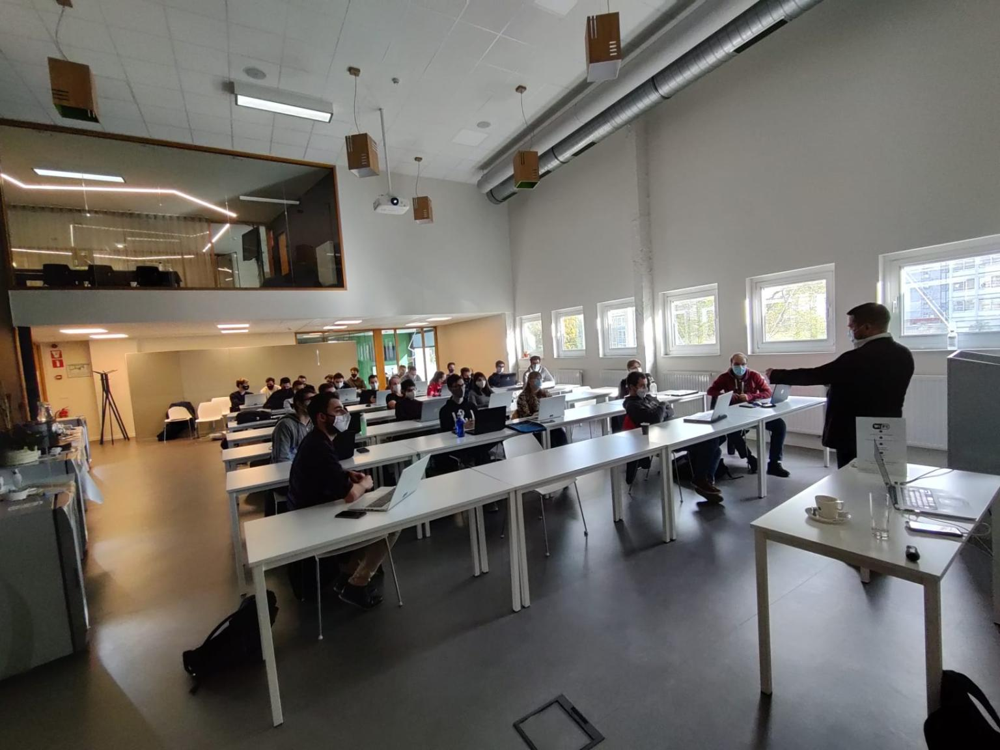

Omschrijving
Dit seminarie, gegeven door het bedrijf Settlemint, ging over blockchain. Over een periode van twee dagen werd blockchain uitgelegd, van de geschiedenis en oorsprong ervan tot wat we er in de toekomst van kunnen verwachten.
Kern
De PXL organiseerde in samenwerking met Settlemint een seminarie over blockchain. Blockchain wordt wel de grootste uitvinding na die van het internet genoemd. Steeds meer bedrijven verkennen de mogelijkheden van deze technologie om data en transacties veilig en efficiënt op te slaan. Wat blockchain is en wat we er van kunnen verwachten werd uitgelegd tijdens dit seminarie.
Op dag één van dit seminarie werden we opgewacht door Matthew Van Niekerk en begon het seminarie met een algemene uitleg over blockchain. Velen, inclusief mezelf, wisten niet precies wat blockchain precies inhield. Waar iedereen wel van op de hoogte was, is dat de virtuele munt Bitcoin en andere cryptocurrencies gebaseerd zijn op blockchain technologie. De introductie maakte duidelijk dat blockchain een op software gebaseerde techniek is om transacties tussen vele partijen die elkaar niet noodzakelijk vertrouwen, toch in goede banen te leiden.
Het tweede deel van dag één ging over data. Blockchain fungeert als een soort luchtverkeersleider die inkomende vragen verwerkt en bepaalt wie tot welke data toegang krijgt. Veiligheid is hier uiteraard topprioriteit. Steden, gemeenten, openbare diensten, ziekenhuizen … dienen er over te waken dat de gegevens van hun burgers of patiënten enkel voor de juiste doeleinden, anoniem en binnen een duidelijk gedefinieerd juridisch kader gebruikt worden. Het werd duidelijk dat er toch veel rekening gehouden moet worden met de veiligheid van de data en in welke handen deze data terechtkomt. Tegenwoordig is er een overvloed aan data beschikbaar. Overal wordt data bijgehouden omdat deze zo waardevol is. Blockchain wil deze data delen met iedereen, hierbij rekening houdende met het behouden en beschermen van de privacy van mensen.
Dag twee bestond uit zowel een theoretisch gedeelte als een praktijkgedeelte. Er werd dieper ingegaan op blockchain en er werden voorbeelden aangehaald vanuit het dagelijkse leven. Ook werd er aangehaald dat blockchain niet altijd even veilig was. Zo werden zowel in het verleden als zeer recent identiteitsdiefstallen vastgesteld. Dit laat zien dat ook blockchain nog niet op punt staat en dat er nog veel optimalisaties kunnen worden toegevoegd om dit te verbeteren.
Tijdens het praktijkgedeelte moesten we in groep een toepassing van blockchain uitwerken. We kregen even de tijd om na te denken over een zelf gevonden toepassing waarna we deze konden presenteren aan de groep. De oefening liet zien dat wij als studenten veel extra toepassingen kunnen bedenken die kunnen worden verwezenlijkt door blockchain te gebruiken. In de toekomst zullen we dan ook nog veel blockchain applicaties en toepassingen tegenkomen in velden als economie, computerwetenschappen en cryptografie.
Het is goed om te weten dat er rekening gehouden wordt met privacy en veilige transacties. Het was een seminarie met zeer veel theoretische informatie waardoor het soms moeilijk te volgen was. Toch ben ik geïnteresseerd geraakt in blockchain aangezien het een innovatieve en hoopvolle toepassing is die in de toekomst steeds meer gaat opkomen. Ik ga in de toekomst bij het ontwikkelen van applicaties. zelf ook voldoende rekening houden met veiligheid. Het is een gegeven waar altijd aan moet worden gedacht. Het is namelijk belangrijk om bezig te zijn met privacy en veiligheid in een tijd waar en meer en meer data opduikt en transacties gebeuren.
Reflectie
Dit seminarie was een uitgebreide uitleg over blockchain. Het bestond voornamelijk uit theorie maar er was ook een leuke praktijkoefening. Blockchain werd uitgelegd, van de oorsprong en geschiedenis ervan tot wat we er in de toekomst van kunnen verwachten. Tijdens de praktijkoefening was het de bedoeling om in groep een nieuwe, niet bestaande toepassing van blockchain te pitchen voor de hele groep. Over het algemeen was het een leerrijk seminarie waarbij er nieuwe inzichten ontdekt werden bij de studenten.
Er kwam veel theorie aan de pas waardoor het soms moeilijk was te volgen. Ook werd dit seminarie in het Engels gegeven wat in combinatie met de moeilijke woorden het ook lastig maakte. Tijdens dit seminarie heb ik wel veel bijgeleerd over blockchain. Zo zal ik onthouden dat blockchain technologie het veiliger maakt om aan transacties te doen en om data op te slaan. Ook heeft het me doen inzien dat blockchain in de toekomst zal toenemen in gebruik aangezien dit grote voordelen met zich meebrengt.
Ik ben blij dat ik aan dit seminarie heb deelgenomen. Ik weet nu dat er een veilige oplossing bestaat om transacties uit te voeren en data op te slaan ook al is deze oplossing nog verder te verbeteren. Al de aspecten die aan bod zijn gekomen hebben me inzicht gegeven in hoe gevaarlijk onveilige transacties wel kunnen zijn en hoe noodzakelijk het is om veilig data op te slaan om privacy- en veiligheidsredenen.
Ik heb dit seminarie gekozen omdat ik mijn kennis wou uitbreiden op vlak van IT en ik nog niet veel wist van blockchain. Blockchain zal me bijblijven in de toekomst wanneer ik applicaties ga ontwikkelen.